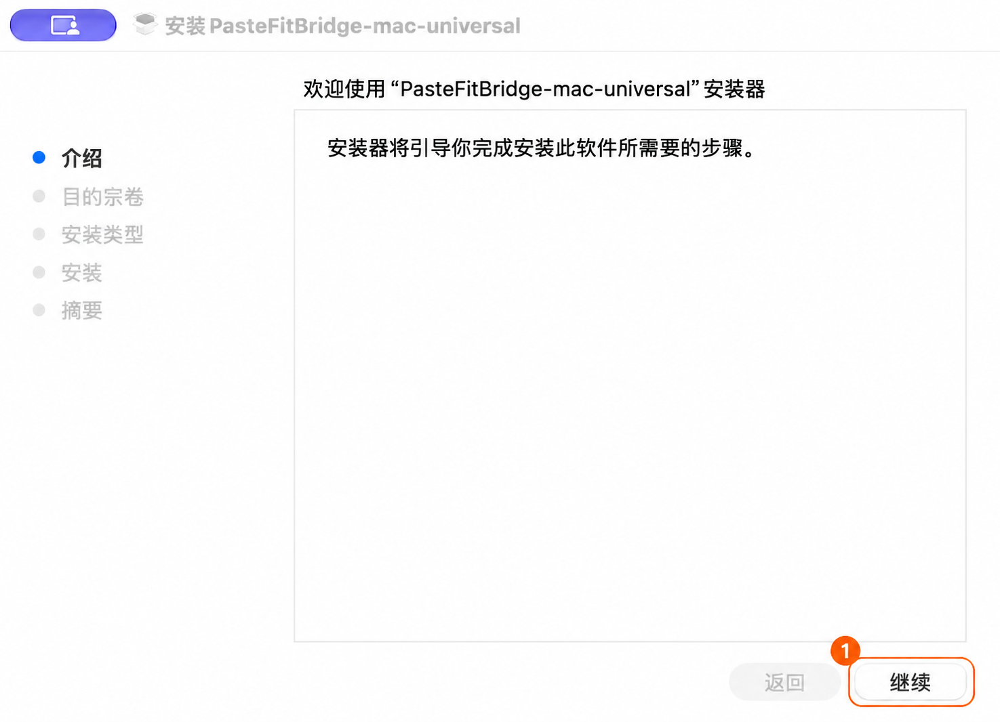
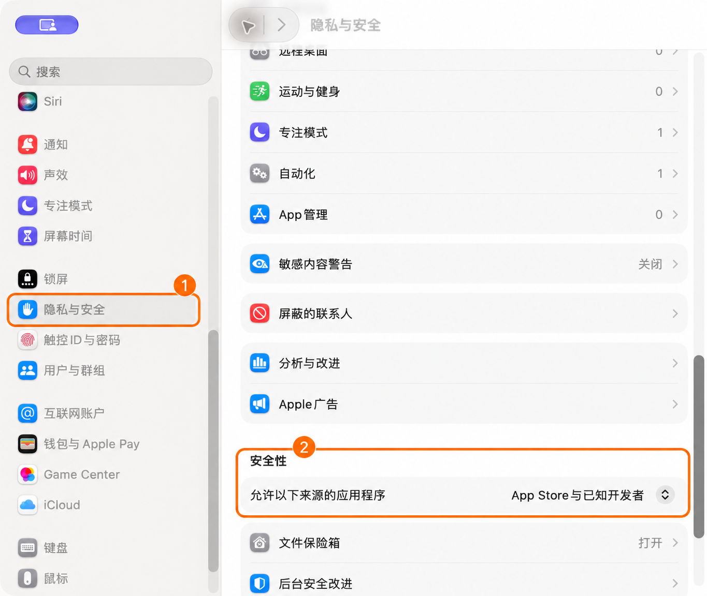
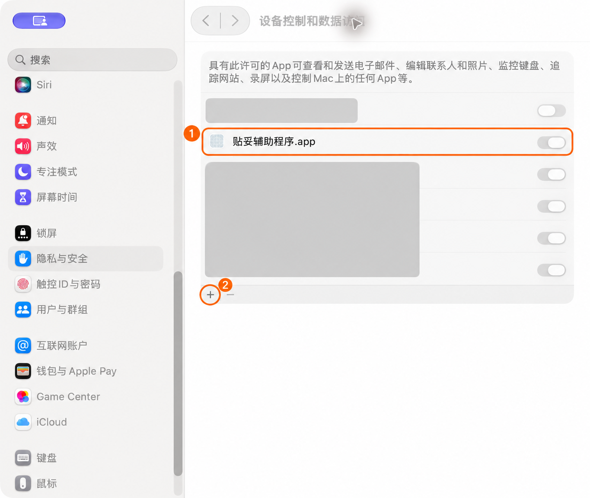
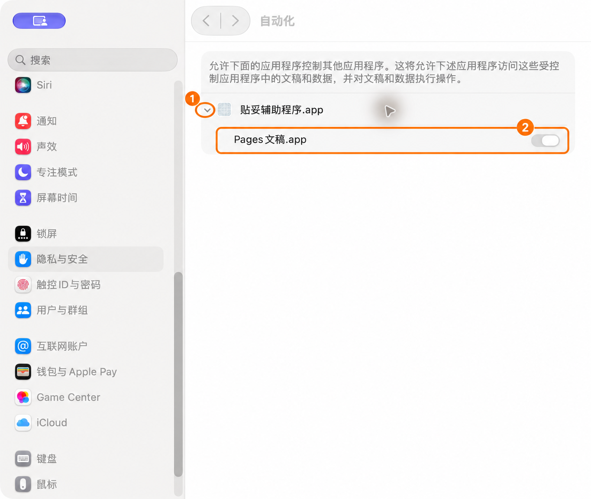

贴妥Mac 可选公式增强 · 操作说明
跟着当前这一步操作
点击图片可以放大查看。
普通复制不用安装。只有需要 Pages 可编辑公式时，才需要这套设置。已经设置完成就直接使用，不必重做。
1. 安装组件
在向导点“下载安装”，打开 PKG。点“继续”→“安装”，看到“安装成功”后回到 Chrome。系统密码或 Touch ID 在系统窗口本人确认。

2. 隐私与安全：允许运行
只有提示“Apple 无法验证”时才需要：打开系统设置→隐私与安全，向下找到“安全性”，在贴妥旁点“仍要打开”，由你本人确认后回到向导重新检查。

3. 设备控制和数据访问：开启贴妥
在向导点“打开系统设置”，找到“贴妥辅助程序”，开启右侧开关，再回 Chrome。部分系统把这一页叫“辅助功能”。

找不到贴妥，或开关已开仍不行？
点“＋”，在选择窗口按 ⌘⇧G，输入 /Applications/贴妥辅助程序.app，点“打开”并开启。若仍显示未授权，只移除贴妥这一项再重新添加。这样会重新授予它控制界面的权限，用于临时公式转换；密码只在系统窗口输入。
4. 自动化：允许控制 Pages
回向导点“允许控制 Pages”。出现系统提示时点“允许”；若之前拒绝过，进入隐私与安全→自动化，展开贴妥，再开启 Pages。

5. 试用并完成
在向导点“开始试用”。它使用固定公式，会替换剪贴板，请等到完成。如果 Pages 停在启动“打开”或模板窗口，先创建空白文稿，再回向导重试。